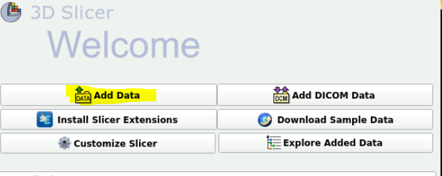
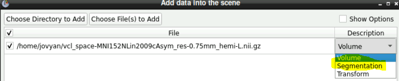
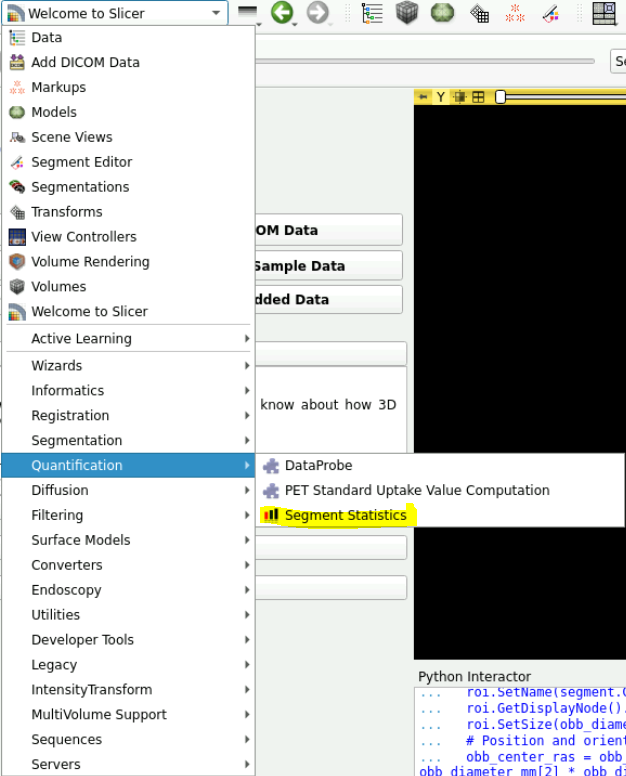
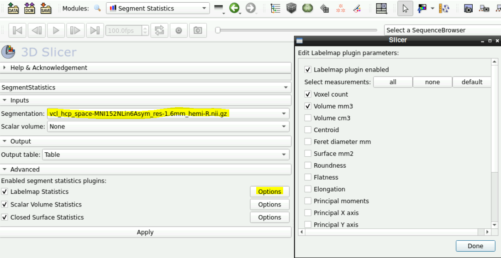
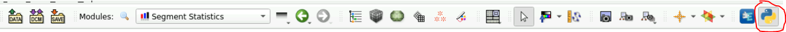
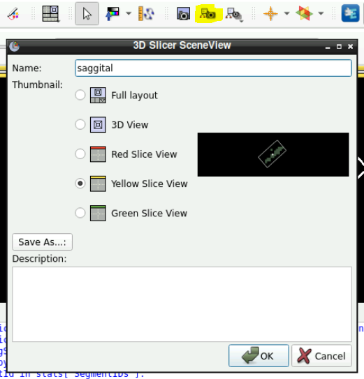
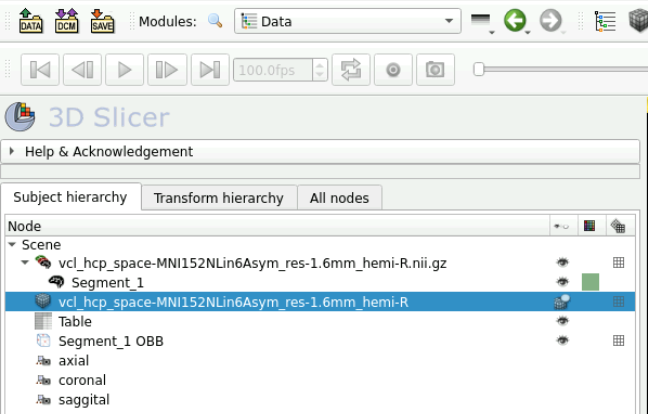
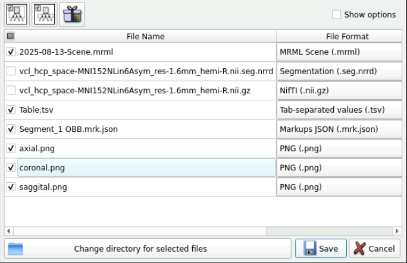

Calculating oriented bounding box
Importing data
On the server use 3D slicer 5.0.3
At the very top, click the drop down menu and select “Welcome to Slicer”
Click add data

Import data as a “segmentation” not as a volume > This is the data that you want to measure
Import data again but as a “volume” > This is needed in case you want to combine segmentation’s together

Getting segmentation statistics as a table
- Click on the drop down menu and select “Quantification -> Segment Statistics”

In the Inputs field ensure that the segmentation you want the statistics on is selected
To add more stats click on the opitions next to “Labelmap Statistics”
- Here you can add stats for different measuring
Click apply

Getting oriented bounding boxes
Oriented bounding box provide a nice visualization to accompany the statistics. There is some python script to do this.
- Click on “show Python interactor on the top right” (should open up a Python subshell)

1. Get the statistics of the segmentation first
segmentationNode = getNode("Name of the segmentation") # here change the name of the segmentation to the name of the segmentation
# Compute bounding boxes
import SegmentStatistics
segStatLogic = SegmentStatistics.SegmentStatisticsLogic()
segStatLogic.getParameterNode().SetParameter("Segmentation", segmentationNode.GetID())
segStatLogic.getParameterNode().SetParameter("LabelmapSegmentStatisticsPlugin.obb_origin_ras.enabled",str(True))
segStatLogic.getParameterNode().SetParameter("LabelmapSegmentStatisticsPlugin.obb_diameter_mm.enabled",str(True))
segStatLogic.getParameterNode().SetParameter("LabelmapSegmentStatisticsPlugin.obb_direction_ras_x.enabled",str(True))
segStatLogic.getParameterNode().SetParameter("LabelmapSegmentStatisticsPlugin.obb_direction_ras_y.enabled",str(True))
segStatLogic.getParameterNode().SetParameter("LabelmapSegmentStatisticsPlugin.obb_direction_ras_z.enabled",str(True))
segStatLogic.computeStatistics()
stats = segStatLogic.getStatistics()- After this step run
print(stats)to ensure that it actually worked and that you can see all the “segmentIds” printed out
2. Generate the bounding box
- Paste this into the python subshell
import numpy as np
for segmentId in stats["SegmentIDs"]:
# Get bounding box
obb_origin_ras = np.array(stats[segmentId,"LabelmapSegmentStatisticsPlugin.obb_origin_ras"])
obb_diameter_mm = np.array(stats[segmentId,"LabelmapSegmentStatisticsPlugin.obb_diameter_mm"])
obb_direction_ras_x = np.array(stats[segmentId,"LabelmapSegmentStatisticsPlugin.obb_direction_ras_x"])
obb_direction_ras_y = np.array(stats[segmentId,"LabelmapSegmentStatisticsPlugin.obb_direction_ras_y"])
obb_direction_ras_z = np.array(stats[segmentId,"LabelmapSegmentStatisticsPlugin.obb_direction_ras_z"])
# Create ROI
segment = segmentationNode.GetSegmentation().GetSegment(segmentId)
roi=slicer.mrmlScene.AddNewNodeByClass("vtkMRMLMarkupsROINode")
roi.SetName(segment.GetName() + " OBB")
roi.GetDisplayNode().SetHandlesInteractive(False) # do not let the user resize the box
roi.SetSize(obb_diameter_mm)
# Position and orient ROI using a transform
obb_center_ras = obb_origin_ras+0.5*(obb_diameter_mm[0] * obb_direction_ras_x + obb_diameter_mm[1] * obb_direction_ras_y + obb_diameter_mm[2] * obb_direction_ras_z)
boundingBoxToRasTransform = np.row_stack((np.column_stack((obb_direction_ras_x, obb_direction_ras_y, obb_direction_ras_z, obb_center_ras)), (0, 0, 0, 1)))
boundingBoxToRasTransformMatrix = slicer.util.vtkMatrixFromArray(boundingBoxToRasTransform)
roi.SetAndObserveObjectToNodeMatrix(boundingBoxToRasTransformMatrix)
3. make it prettier
Click on the drop down menu and select “Markups”
Here its self explanatory to make some changes to the color, opacities for the fill color etc. etc.
4. Make screenshots
Get the views how you want them to be in the screenshots, zoom in with ctrl+mousescroll and move through the slices with up and down arrow. Click and hold middle mouse button to pan around the view
In the toolbar at the top click on “Capture and name a scene view”
Select the view (red, green, yellow) and save it.

5. Save data
Click File -> Save Data
Select the data you want to save and then choose the directory of where to save it
Here you should have the following:
- Original imported data
- segment.json
- Table.tsv
- Screenshots
- A
.mrmlfile


To combine 2 or more segmentations
- Combining segmentations is needed if you have fragmented masks for example and want to measure a bounding box across the whole mask. In fMRI data, if you have more than 1 surviving cluster and want to measure area across the clusters.1
To do this:
show all the segments that you want to add (hide those segments you don’t want to add)
select “Logical operators” effect
select “Operation” → “Fill”
uncheck “Bypass masking”
select “Masking” / “Editable area” → “Inside all visible segments”
Create a new segmentation to apply the new combined segmentation to
Click “Apply” (when the new segmentation is highlighted)
Here is a video link https://us1.discourse-cdn.com/flex002/uploads/slicer/original/3X/8/7/87621985237ec8a8a2d30e9d65e0b200a4529169.mp4
Footnotes
Although for fMRI data you’d probably prefer to measure each cluster individually! who have more than 1 cluster for example.↩︎